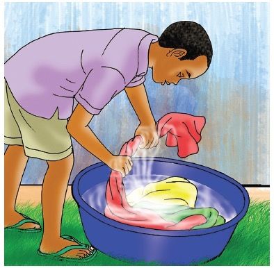
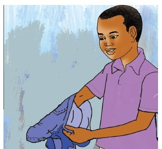

Page 40
5
Step 5

A pupil rinsing clothes with clean water and squeezing them.
I rinse the clothes with clean water and squeeze them.
6
Step 6

A pupil turning a washed garment inside out.
I turn clothes inside out.